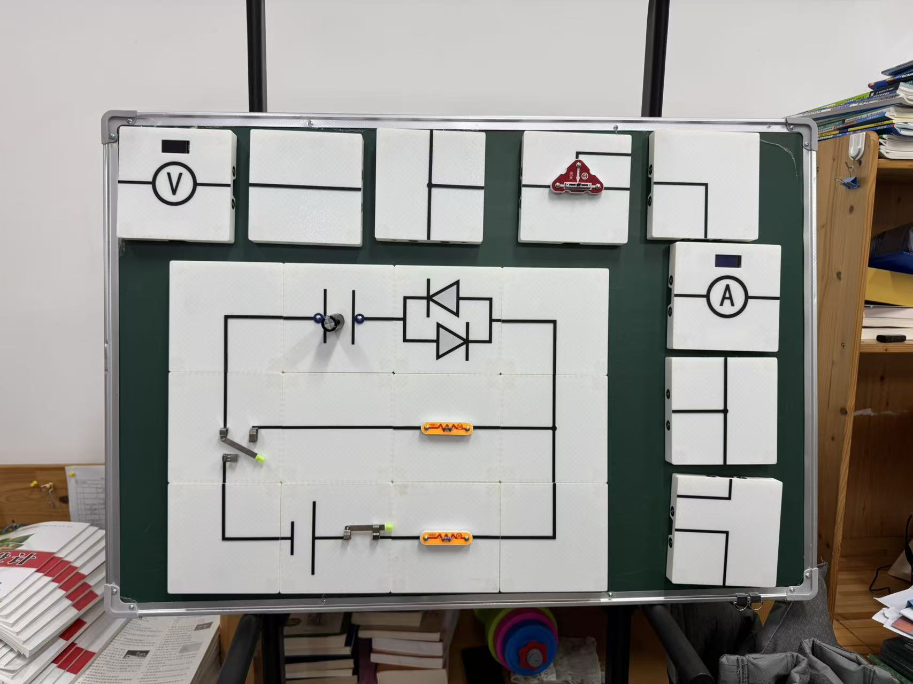

共同判断：工具是否先进不是章节价值。读者要看见项目为什么这样生长、怎样检查、能复制哪一层，以及证据在哪里停止。


审阅时比较什么
| 维度 | 网站 | 静电场 | 活版电路 |
|---|---|---|---|
| 项目生长主线 | 课堂需求与技术能力汇合 | 装置、测量与模型相互约束 | 电路图被翻译成实体语法 |
| 读者可跟做入口 | 离线落体法MVP | 预测—测量—比较协议 | 电容充放电六步复做 |
| 当前最关键缺口 | 目标设备和课堂试走 | 冻结参数、新实测与定标 | 工程图、完整接线与原始曲线 |
三篇第二稿不追求同一种写法。它们共同从真实教学问题出发，却分别展示AI Coding、AI协作数值建模，以及基本不依赖AI的实体教学可视化。

| 维度 | 网站 | 静电场 | 活版电路 |
|---|---|---|---|
| 项目生长主线 | 课堂需求与技术能力汇合 | 装置、测量与模型相互约束 | 电路图被翻译成实体语法 |
| 读者可跟做入口 | 离线落体法MVP | 预测—测量—比较协议 | 电容充放电六步复做 |
| 当前最关键缺口 | 目标设备和课堂试走 | 冻结参数、新实测与定标 | 工程图、完整接线与原始曲线 |